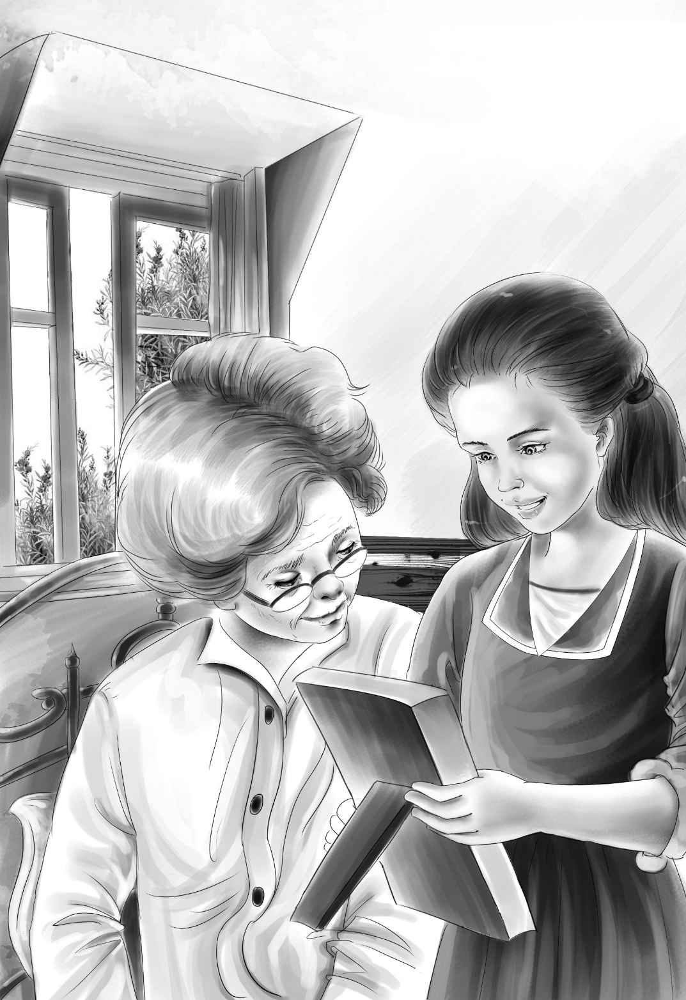

Let’s not wait for Maggie，“ Jessie said，in her businesslike way. Let’s get dinner.”
Soon，Violet was busy beating eggs in a bowl. Jessie put butter in a big pan and set it on the stove. The girls put pieces of dry bread in the eggs and milk，and Jessie began to brown them in the pan.
“My，that smells good！” cried Maggie，coming into the kitchen. “She going to eat this？”
“No，” said Jessie. “I’m just going to give her something to drink. But we’ll eat first.”
Violet had found a pretty blue cloth and some white flowers. She had set three places with fine old blue plates. A knife and fork were at each place，and a glass of milk.
“All ready！”Jessie said，with a smile. “Come on，Maggie，and sit down. I hope you’ll have enough to eat tonight.”
“It’s the most I have had for two weeks，anyway，”said Maggie. “You are a good cook for a young girl.”
They did not hear a sound from the bedroom. At last，even Maggie couldn’t eat any more.
“Now for Aunt Jane，” said Violet，getting up. She opened the lunch box and took out an orange.
“I could drink that myself！” Violet said，watching Jessie mix the orange juice with a beaten egg.
Jessie knocked gently on the bedroom door.
“Well，come in！” said Aunt Jane. “Don’t stand there knocking！”
Her voice was cross，but Jessie thought she had been lying there waiting for something to happen. She put the glass on the table. Then she went over to the bed，and bent over the tiny little lady.
“Aunt Jane，this is delicious，” she said. “Violet and I made it just for you.”
Jessie went on，“Now I’m going to lift you up higher in the bed，so you can drink better.”
To the old lady’s surprise，Jessie lifted her in her strong arms as if she were a child. Then she took the glass and sat down by the bed.
“Drink it slowly，” she said. “As Benny would say，‘Don’t rush it.’”
“Who is this Benny？”
“Well，”began Jessie.“Benny is—”she stopped. “It’s so hard to tell you about our brother Benny.”
Violet came in，folding up the blue tablecloth. She acted as if she had always lived there.
She said，“Benny is the funniest boy you ever saw，Aunt Jane，and he is good，too. He can always make people laugh. He loves our dog，Watch. Benny and Watch almost talk to each other. Benny always looks for Watch if things go wrong.”
Jessie noticed that her aunt was drinking the egg and orange; and not very slowly，either. She seemed to be very hungry.
“Who else is in your family？” asked Aunt Jane.
“Well，there’s Henry，” said Jessie. “He’s our oldest brother. He is very clever，and very kind and thoughtful. He can make Benny mind，too，without being cross.”
“If your brothers are like you，I’d like to see them，too. Take the glass now，and go. I’m tired.”
Jessie bent down again and lowered the little lady from her high pillows.
“Call Maggie now，” said Aunt Jane.
The girls went out quietly and called Maggie. They finished washing the dishes. Then they waited in the front room for Maggie.
“You see how she is，” said the tired woman.“First she wants me，and then she doesn’t. I think she is finally settled for the night. You might as well go to bed，too.”

“A fine idea，” said Jessie. “Where do you sleep？”
“In this room off the kitchen，” said Maggie. “If you want anything in the night，you can come down.”
“Thanks，Maggie，” said Jessie. “We won’t feel so strange here，knowing that.”
“Well，thank you both，” she answered. “It’s wonderful to have someone nice to talk to.”
The girls went up to their big room. They climbed into bed and talked awhile.
“How beautiful the stars are！” Violet said. “They seem so near.”
“I have never seen stars so bright before，” said Jessie. “It’s because there are no other lights at all.”
Just as they were going to sleep，Jessie laughed and said，“Violet，where do you suppose that young man went？ The one on the train.”
“I can’t think，” answered Violet. “He just disappeared in the air！”
“A Mystery Man really，” said Jessie.
And so they fell asleep.